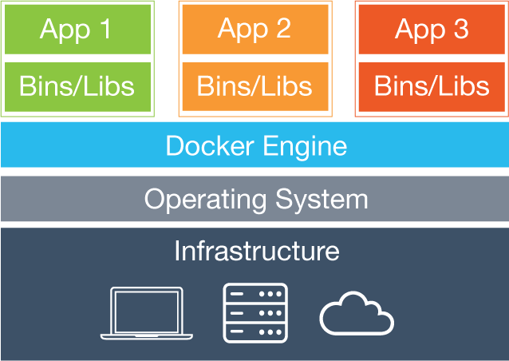
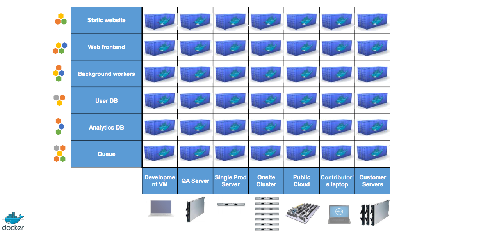

_ _ _ _ _ _ _ _ _ _ _ _ _ _ _ _ _ _ _ _ _ _ _ _ _ _ _ _ _ _ _
&
Taller de Docker & Drupal
¿Quién soy?

La matriz del infierno

Conceptos básicos
- Virtualización: Creación por software de la versión virtual de un recurso tecnológico, habitualmente servidores.
- Maquina virtual (VM): Emulación de una ordenador físico por medio de software en un sistema anfitrión.
- Hipervisor: Sistema anfitrión sobre el que funcionan las VM, puede ser por software ó hardware (poco habituales).
- Escritorio: virtualbox, vmware, etc.
- Servidor: xenserver, proxmox, etc.
Linux Containers (LCX)
- Permite que un servidor físico ejecute múltiples instancias de sistemas operativos aislados compartiendo el core.
- Pueden tener diferentes Sistemas Operativos (debian, centos, redhat, ubuntu, etc.) siempre que tengan la misma versión del core que el sistema anfitrión.
- Consumen menos recursos hardware y software que las VM.
- Implementación basada en imágenes.
- Aislamiento de aplicaciones que se pueden combinar.
Y llegó Docker y su Dockerfile
- Docker define un formato para empaquetar una aplicación y todas sus dependencias en un solo objeto que pueden ser transferidas a cualquier otro sistema Docker, y ser ejecutados allí con la garantía de que el entorno de ejecución será siempre el mismo.
- Contenedores: contienen todo lo necesario para que una aplicación pueda funcionar.
- Imágenes: sistema operativo con aplicaciones instaladas y configuradas.
Estructura de Docker
La solución de Docker
Docker Registry
- Registry: Servidor que contiene repositorios e imágenes.
- Repositorios: Contiene imagenes creadas y listas para ser descargadas.
- Repositorio oficial
https://hub.docker.com
- En Dockerhub podemos crear repositorios privados ó públicos.
- Dockerhub se integra con repositorios de código como GitHub y construye las imagenes al actualizarlos.
- También podemos tener nuestro propio Registry que se crea a partir de una imagen Docker.
Instalación de Docker
-
https://docs.docker.com/engine/installation
Windows y Mac OSX
- Necesitamos un hipervisor como Virtualbox
- Windows 7 ó superior https://docs.docker.com/docker-for-windows/install/
- Mac OSX 10.8 ó superior https://docs.docker.com/docker-for-mac/install/
Cómo funciona?
- Descargamos una imagen base de un repositorio.
docker pull - A partir de la imagen base creamos nuestro contenedor.
docker run - Realizamos los cambios que deseamos sobre el contenedor.
- Creamos nuestra imagen personalizada
docker commit - Subimos la imagen a un repositorio (público ó privado).
docker push - Reutilizamos nuestra imagen docker como base para nuevos contenedores.
docker [OPTIONS] COMMAND [argumentos]### Ejemplos: ``` docker pull drupal:8 docker run -it drupal:8 bash docker ps -a docker start *musing_turing* docker exec -it *musing_turing* bash docker ps -a docker stop *musing_turing* docker rm *musing_turing* ```
Vamos a crear nuestra propia imagen
Ventajas- Evitamos tener que ejecutar el mismo código cada vez
- Podemos distribuir nuestra configuración
- Podemos abstraer a los desarrolladores de aspectos de DevOps
- Otras que se me irán ocurriendo durante este taller...
Docker-compose
Constructor de aplicaciones multi-contenedorQué necesitamos:
- Carpeta del proyecto.
- fichero docker-compose.yml.
- levantar todo: docker compose up
qué contiene docker-compose.yml?
- descriptor de los contenedores.
- formato de serialización yaml.
- especificamos: contenedores, propiedades, variables de entorno, etc
Aplicaciones prácticas
Dependiendo de tu perfil:
- DevOps
- Desarrollador (back o front)
DevOps
Es posible tener diferentes configuraciones dependiendo del entorno
- Prod: Mínima configuración, foco en performance.
- Pre-prod: Basado en la configuración de Prod. Se usa habitualmente para construir el entorno de integración.
- Dev: Basado en Pre-prod, puede añadir herramientas útiles en desarrollo: xdebug, vim, sass compiler, etc.
DevOps
Otras cosas que hacen la vida más fácil:
- Distribución de imágenes cocinadas listas para usar en cada entorno.
- Sistemas de integración continua.
- Control de versiones sobre la configuración.
- Eliminación del efecto “a mi me funciona”.
DevOps
Despliegues
- Las imágenes de nuestra aplicación son los artifacts que desplegamos
- Worflow simple: generas una imagen, despliegas, post-scripts
-
Desplegar o actualizar una imagen nueva es simple y rápido:
docker-compose up -d - Gestionar actualizaciones y cambios de versión pasa por construir la nueva imagen y cambiar un número en el docker-compose.yml
Dev (back & front)
- Simplificación del workflow de trabajo.
- Posibilidad de tener múltiples entornos en la misma máquina.
- Cambiar entre proyectos es fácil.
- Desarrollo y tests sobre entorno idéntico a producción.
- No queremos saber nada de sistemas!
Dev (back & front)
¿Cómo modifico mi código?
Hay varias opciones.
- Entro en el contenedor, uso Vim, git, etc.
- Mapeo el directorio donde está mi código y lo modifico desde el exterior. (=> permisos :-S).
- Nuestra solución: contenedor extra con SSH y que usa el volumen de Drupal (sshfs).
A tener en cuenta...
No confies en alguien que te diga que Docker es un camino de rosas.
A tener en cuenta...
Empieza desde abajo, déjate el balconing.
A tener en cuenta...
Hay más dockers en el mar.
Google, CoreOs, RancherOs, ...
A tener en cuenta...
Cuidado con los trendy guys.
¿Preguntas?
_ _ _ _ _ _ _ _ _ _ _ _ _ _ _ _ _ _ _ _ _ _ _ _ _ _ _ _ _ _ _
Gracias
Ignacio López Flores